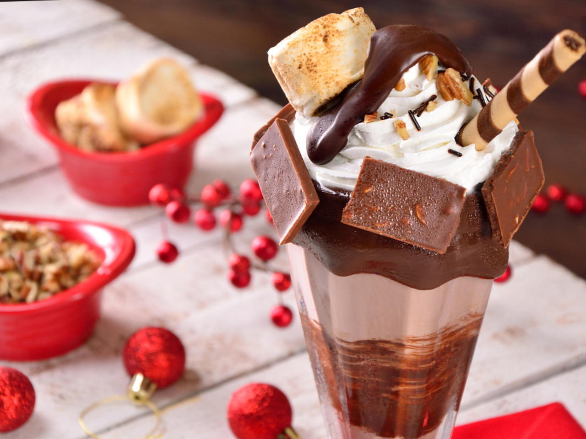
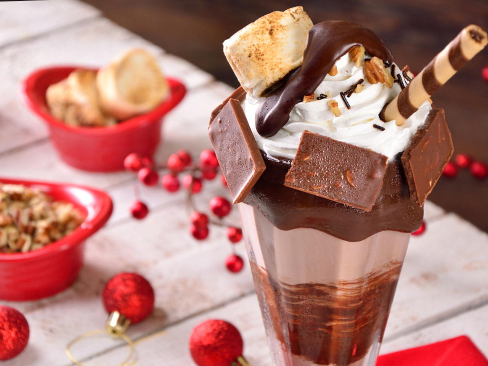

Favoritos:

 


Historial:
Pizza de coliflor
16 de Junio 2019
Habrás comido pizzas de todos los tipos, con masas más o menos finas, ingredientes de lo más variados y puede que hasta dulces... pero seguro que nunca has probado una pizza hecha con la base de coliflor. Es sorprendente, mucho más sana y muy fácil de hacer. Te damos todas las claves para que puedas prepararla en casa, paso a paso. Seguro que repites.
Pollo al horno al limón
6 de Junio 2019
Aunque es muy sencilla de preparar, cuando se haga esta receta es importante estar pendiente de que el pollo no se quede seco, así que habrá que vigilar de vez en cuando para, si es necesario, ir añadiendo vino o cerveza durante el asado. Prueba a darle un toque diferente y en lugar de usar limón utiliza naranja y sigue la misma elaboración ¡Ya verás qué bien queda también de esta forma!
Tarta de almendras y albaricoques
26 de Mayo 2019
La receta de esta tarta base -hecha con harina, almendras, azúcar y huevos- nos vale casi para cualquier fruta. Aprovechamos la temporada de albaricoque fresco para incorporarlo cortado en mitades por toda la superficie. La dejamos enfriar, la espolvoreamos con azúcar glas y tendremos un delicioso dulce tanto para el desayuno y la merienda o para servir como postre.